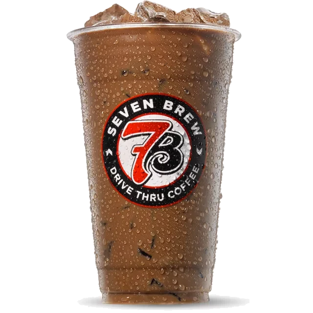

Independent 7 Brew menu guide · Reviewed September 9, 2026
7 Brew Banana Bread: Calories, Caffeine, Price & Recipe
Explore the Banana Bread flavor combination, how to order it, alternatives and where to check the correct calories and caffeine for your preparation.

What is in a Banana Bread?
Banana + Hazelnut Mocha. It is listed in 7 Brew’s 7 Originals collection. Official Banana Bread listing.
The 7 Original is a mocha. A canned Banana Bread chilled espresso breve is a separate product; do not use can nutrition for the drive-thru mocha.
What Does Banana Bread Taste Like?
The Banana Bread drink tastes like a slice of freshly baked banana bread in coffee form — sweet banana flavor up front, followed by warm, bakery-style notes of cinnamon and brown sugar. There are subtle nutty undertones reminiscent of walnuts, plus a hint of vanilla that adds smoothness and rounds out the sweetness. The espresso anchors everything with roasted depth, keeping the drink from becoming a straight-up dessert. The result is a comforting, balanced beverage that is neither overly sugary nor bitter.
The half-and-half breve base gives the drink a creamy, almost batter-like richness that makes the banana bread comparison feel earned. It is one of the most unique flavors on the 7 Brew menu — nothing at Starbucks or Dutch Bros quite matches it. Order it hot on a cold morning for maximum cozy factor, or iced if you want something lighter. The banana flavor works surprisingly well as a frozen chiller too. Check the calorie breakdown by size before ordering, since the breve base does add up compared to a standard latte.
How to order it
An example order is: “A medium iced Banana Bread, please.” Add your preferred sweetness, milk and topping choices before the order is finalized. The official menu lists hot, iced and frozen chiller preparations for the Originals. Ask the stand to confirm any substitution.
Quarter, half, regular and extra sweetness are menu options. “Half sweet” describes a flavor adjustment; it does not mean half the total calories.
Which coffee should you choose?
A banana-and-hazelnut coffee choice with a mocha base.
Brunette also uses hazelnut and a mocha base, but pairs hazelnut with caramel instead of banana.
Calories, caffeine and price
Use the official nutrition guide and match the exact drink name, size and hot, iced or frozen preparation. Milk substitutions, sauces and toppings can change the result. A single calorie or caffeine number cannot describe every version of this drink.
For a current price, select your stand in the official app or ask at the drive-thru. Our menu overview displays estimates rather than a verified nationwide price list.
Try the Banana Bread in a Can
The Banana Bread is now available as a canned espresso breve at Walmart for $2.98. This is the most unique RTD flavor — there's no permanent year-round drive-thru equivalent, making the Walmart can the only way to get it anytime. Rated 4.3 stars with 647+ reviews.
Is there a sugar-free Banana Bread Mocha?
Yes. Ask for sugar-free syrup and a medium drops 47 g of sugar, going by 7 Brew's published nutrition. The milk still carries some natural sugar, so it is low-sugar rather than zero. Our sugar-free menu and checker shows the same comparison for every drink that can be swapped.
Make a Banana Bread at Home (Copycat Recipe)
Two flavors do the work here: banana and hazelnut in equal parts, over a mocha. That banana-plus-nut pairing is what reads as banana bread. No baking, no actual banana required, though nothing stops you adding a drizzle of caramel and calling it the Blondie version instead.
For one medium iced Banana Bread (24 oz cup)
- 2 shots of espresso (about 2 oz), hot
- 1 oz banana syrup
- 1 oz hazelnut syrup
- 1 oz chocolate sauce
- About 8 oz milk or half-and-half
- A full cup of ice
- Pour the banana syrup, hazelnut syrup and chocolate sauce into the cup.
- Add the hot espresso and stir. The heat melts the chocolate into the syrups.
- Fill the cup with ice, then pour the milk over the top.
- Stir once and drink.
Hot version: steam the milk, skip the ice, same syrups and shots. Blondie version: swap the chocolate sauce for 1/2 oz caramel sauce and 1/2 oz vanilla syrup. That is the viral Banana Bread Blondie build. Sugar-free version: swap the syrups for sugar-free versions. At the stand, the sugar-free medium runs 430 calories with 6 g of sugar, going by the official guide. No espresso machine? Use 2 oz of very strong coffee.
Related drink guides
Compare Blondie, Cookie Butter, Banana Bread, Smooth 7 and Brunette.
Frequently Asked Questions About the Banana Bread
- What does the 7 Brew Banana Bread taste like?
- The Banana Bread tastes like freshly baked banana bread in coffee form. Sweet banana up front, roasted hazelnut through the middle, and chocolate underneath from the mocha build. It is banana and hazelnut, not cinnamon. That warm spiced profile belongs to the Cinnamon Roll.
- How many calories are in a 7 Brew Banana Bread?
- A medium iced Banana Bread Mocha has 340 calories and 53 g of sugar. A small iced has 220 and a large 450, according to 7 Brew's official nutrition guide. The sugar-free medium iced is 430 calories with 6 g of sugar, higher in calories than the regular, so swap for sugar reasons, not calorie reasons.
- Is the Banana Bread a signature 7 Brew drink?
- Yes, the Banana Bread is one of 7 Brew's original signature drinks available at every drive-thru location. It is a fan favorite for anyone who loves warm, bakery-inspired coffee flavors.
- Is the Banana Bread a mocha or a blondie?
- The menu drink is the Mocha: banana and hazelnut with chocolate, listed in the 7 Originals. The Banana Bread Blondie is a different, viral order: banana and hazelnut added to a Blondie, so vanilla and caramel instead of chocolate. Same two lead flavors, different base. Prices and calories on this page are the Mocha's.
- Does 7 Brew still have the Banana Bread?
- Yes. It is a permanent 7 Original with full rows in the current official nutrition guide (October 2026), in iced, hot, frozen chiller and sugar-free versions. Order it by name as a Banana Bread Mocha.
- How much caffeine is in the Banana Bread can?
- Walmart lists the 11 oz can as having about as much caffeine as 1 shot of espresso, and 7 Brew does not publish an exact mg figure for the can. The drive-thru mocha is a different drink: 120 mg in a small or medium, 240 mg in a large.
- How many calories are in the sugar-free Banana Bread?
- A sugar-free medium iced has 430 calories and 6 g of sugar, against 340 calories and 53 g in the regular medium iced. Like the other mochas, the sugar-free build cuts the sugar almost to zero but runs higher on calories.
- How do I make a 7 Brew Banana Bread at home?
- For a medium iced: 1 oz banana syrup, 1 oz hazelnut syrup and 1 oz chocolate sauce, 2 shots of espresso, and about 8 oz of milk or half-and-half over ice. The full copycat recipe is in the recipe section on this page.
More 7 Brew Guides
New to 7 Brew? Read What Is 7 Brew Coffee? for the full brand story. Also explore our Matcha Latte guide and the complete best drinks ranking.
Calories and caffeine by size and preparation
Standard recipes from the official October 2026 nutrition guide. Custom milk, sweetness and toppings can change these figures.
| Preparation | Size | Calories | Sugar | Caffeine |
|---|---|---|---|---|
| Iced | Small | 220 kcal | 38 g | 120 mg |
| Iced | Medium | 340 kcal | 53 g | 120 mg |
| Iced | Large | 450 kcal | 76 g | 240 mg |
| Hot | Small | 300 kcal | 48 g | 120 mg |
| Hot | Medium | 400 kcal | 60 g | 120 mg |
| Hot | Large | 500 kcal | 83 g | 240 mg |
| Frozen Chiller | Small | 430 kcal | 65 g | 170 mg |
| Frozen Chiller | Medium | 620 kcal | 89 g | 260 mg |
| Frozen Chiller | Large | 870 kcal | 130 g | 340 mg |
Source: official nutrition guide · Open the nutrition calculator
Estimated prices
Restored planning estimates for a standard Original: small $4.50, medium $5.25, large $6.25. These are not verified local quotes. Check the final price for the selected preparation and additions with your stand.